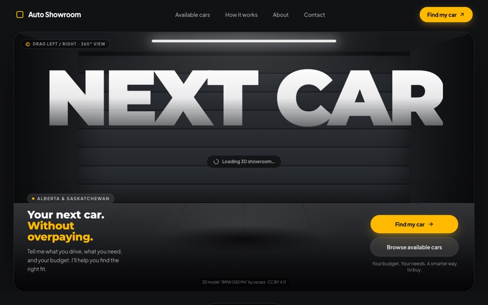
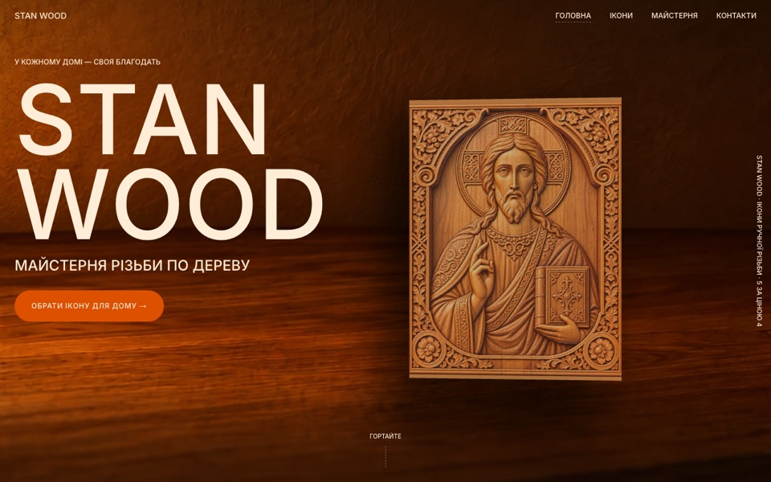
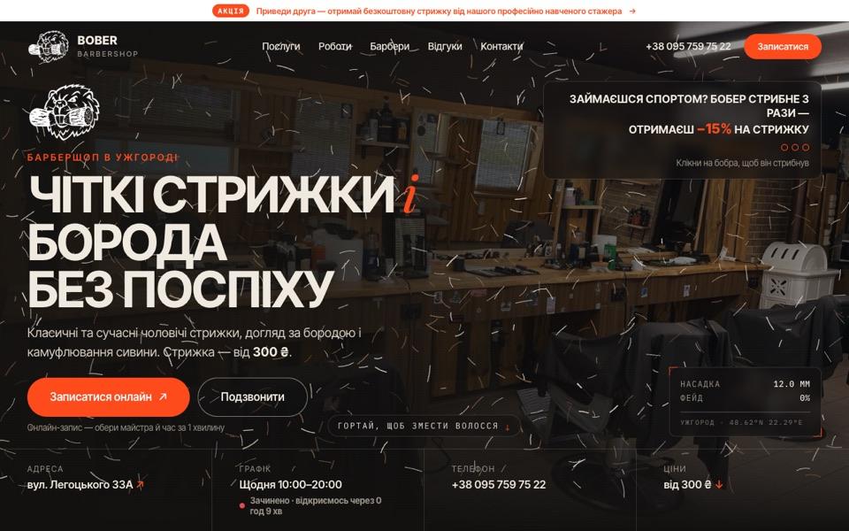

 Website · Car sales A car seller without a business card. Now buyers find him, see the price, and message him directly.
 Website · Craft shop Hand-carved icons, hard to sell in an Instagram post. Now one page shows the craft, the price, and takes the order.
 Booking site · Barbershop A barbershop that only took bookings by phone. Now clients book online in a minute and come back for the beaver's 15% off.